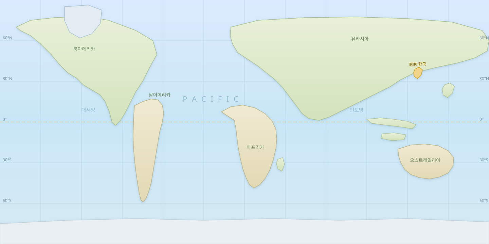

🗺 실제 세계지도 — 태평양 중심

🧭 탐구 질문: 남방진동이 발생하면 한반도의 날씨는 어떻게 될까?
실제 세계지도 위에서 시작 지점을 고르고, 관측 데이터를 보며
대기 순환이 한반도로 이어지는 길을 화살표로 예측하세요.
👇 지도 위 보라색 지점을 클릭해 시작 지점을 정하세요
✕
💡 지도의 ● 지점을 클릭하면 해당 지역의 해수면 온도와 대기 상태를 관측할 수 있습니다.
기압 상승
기압 하강
현재 위치
시작 지점
📜 활동 로그 (실패 경험 기록)
📋 관측 데이터
995~1025 (평년 1013)
지역 관측 참조
-25~+25 (평년 대비)
게임 시작 시 결정됩니다